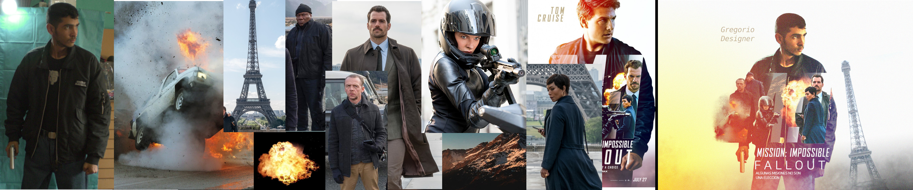

Anteriormente no e podido superar la película la vi docenas de veces "Mission Impossible Fallout" me gusto su ultima entrega de esa saga. Ya tiene como casi 3 años de su estreno, así que estos días estaba pensando en copiar unas portadas de películas y pensé en hacer la de Mission Impossible.
Para este póster use unas imágenes que conseguí de Internet de la misma película, mas unos póster o portada de esa película y dos que eran a parte de esa. Me inspire en este póster:
Allí descargue las fotos que tuvieran un parecido a la del póster original y comencé, dura como 90 minutos buscando todas las fotos mas como 40 minutos tomándome fotos hasta encontrar la que mas se pareciera.
De allí en la edición me tarde aproximadamente 3 horas haciendo recortes, mascaras corrección de color, y muchas otras cosas, hasta conseguir la foto final.
Solo use GIMP la versión 2.10.

Puedes Seguirme en mi cuenta de Instagram: